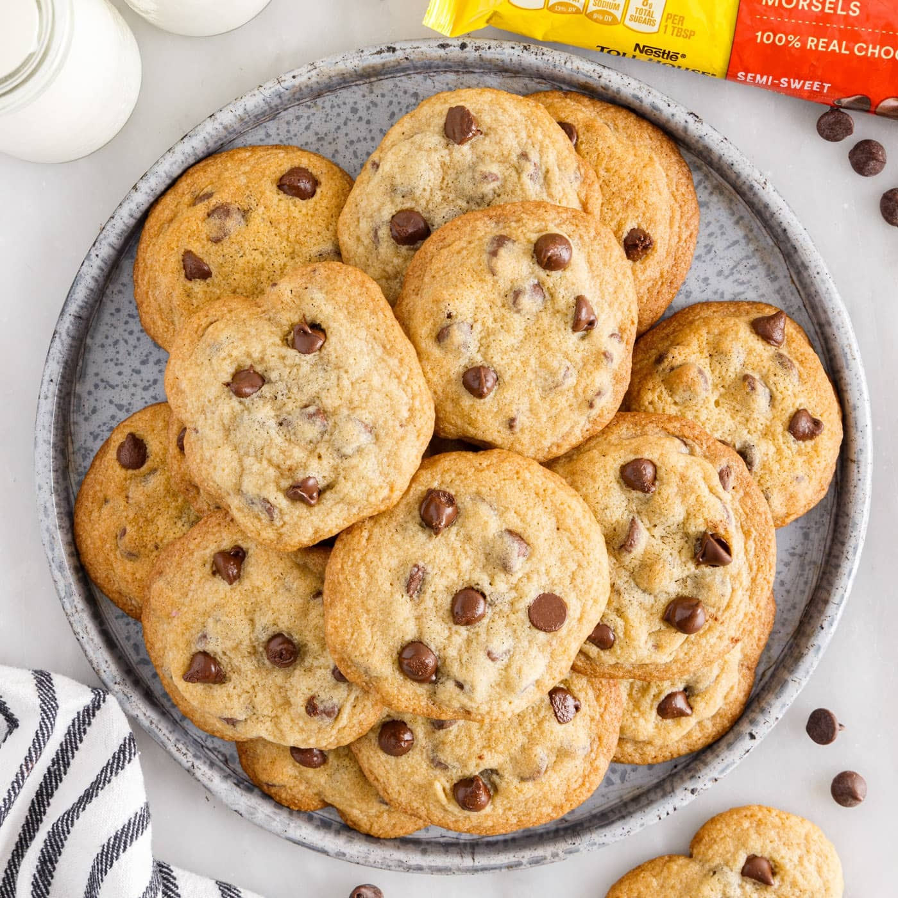
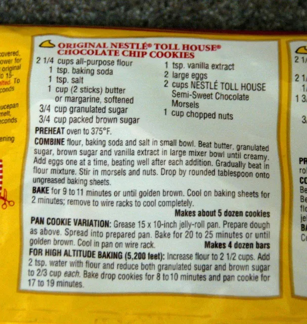
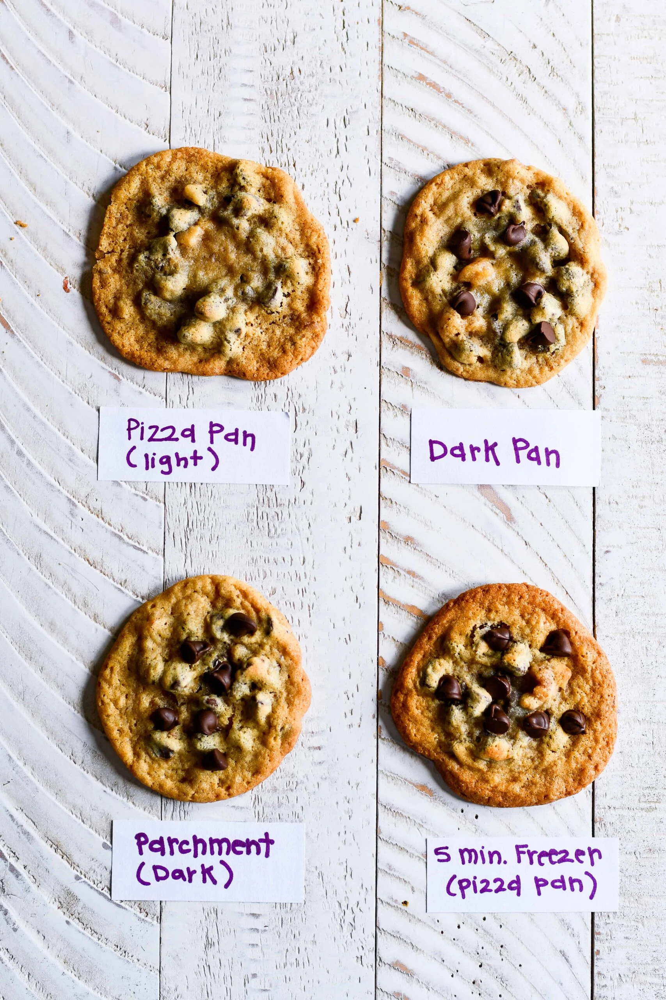

Did you know that contrary to popular belief, the Toll House cookie was not an accident? Famed Baker Ruth Graves Wakefield intentionally created the recipe after iterating with Butterscotch cookies, trying to one up herself with a new invention. It became a smash hit at the restaurant she was working at, the Toll House Inn, and would later gain significance in WWII because of how frequent America soldiers would ask to their families to send them Toll House cookies overseas. Here's the contemporary recipe, as shown below in image and text format:
Ingredients
Estimated Time: ~45 min

Instructions
(As Shown Above)
Preheat Oven to 375 Degrees Fahrenheit.
Combine flour, baking soda, and salt in small bowl.
Beat butter, granulated sugar, brown sugar, and vanilla extract in large mixer bowl until creamy.
Add eggs one at a time, beating well after each addition.
Gradually beat in flour mixture.
Stir in morsels and nuts.
Drop by rounded tablespoon onto ungreased baking sheets.
Make sure you've started preheat before being done at this step so you're not standing around!
Bake for 9 to 11 minutes or until golden brown.
Cool on baking sheets for 2 minutes; remove to wire racks to cool completely.
Makes about 5 dozen cookies.
Enjoy!
Sources